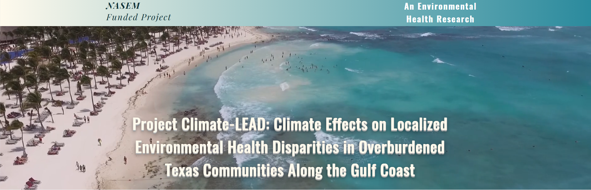

2023–2026Climate-LEAD: Climate Effects on Localized Environmental Health Disparities
Examining climate-related environmental health disparities in overburdened Texas Gulf Coast communities through geospatial analysis, environmental observations, and community-level data.
Research Assistant · Award: $1,499,990
View Project